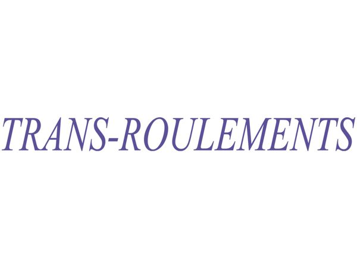
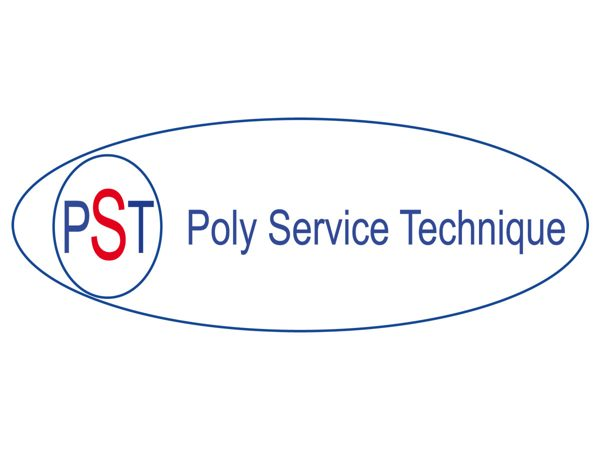
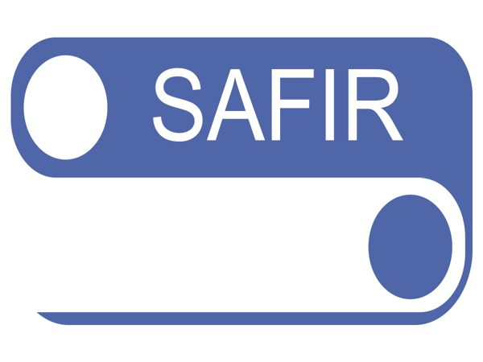
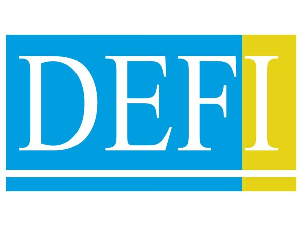
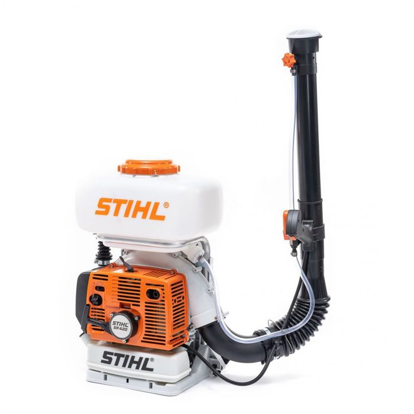
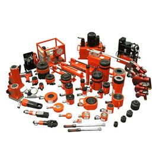

Tronçonneuse
Matériels forestiers, agricoles et industriels, pièces de rechange et service après-vente. Représentant exclusif STIHL en Côte d'Ivoire.
SACRI et ses filiales couvrent la fourniture industrielle, la transmission, le pneumatique et l'hydraulique, les outils de coupe et la construction métallique.
Matériels industriels et agricoles, représentant exclusif STIHL, pièces de rechange et service après-vente.

Fourniture industrielle pour la transmission et les flexibles.

Matériels pneumatiques et hydrauliques, installation, maintenance et SAV.

Scies à ruban, outils de coupe, affûtage et pièces pour les industries du bois.

Construction métallique, tuyauterie et chaudronnerie.

Installée en Côte d'Ivoire depuis 1985, la Société de Commerce et de Représentation Industrielle (SACRI) joue un rôle très important dans l'exploitation forestière et agricole du pays. Elle fournit aux entreprises et aux particuliers des matériels industriels et agricoles de qualité, issus des plus grandes marques, notamment STIHL, dont elle est le représentant exclusif en Côte d'Ivoire.
Une sélection des modèles présentés sur le site actuel. Prix et disponibilité sur demande.



Atomiseurs, tarières, tronçonneuses, récolteuses

Débroussailleuses, élagueuses, souffleurs, tondeuses, couteaux à saigner, couteaux à greffer

Aspirateurs, nettoyeurs, aspiro-broyeurs

Sangles de levage plates et rondes, sangles d'arrimage, câbles acier

Tuyauterie d'aspiration et de refoulement, tuyau cristal, flexibles hydrauliques, embouts, douilles, raccords, adaptateurs, croisillons

Huiles moteur, hydrauliques, boîte et pont, transmission automatique, additifs

Clés à choc, caisses à outils, clés de serrage, marteaux

Gilets, chaussures, casques, masques respiratoires, lunettes, gants, harnais antichute, bottes de sécurité

Compresseurs, groupes électrogènes, mâts d'éclairage, crics, pompes manuelles, palans, presses hydrauliques, perceuses, meuleuses

Tous matériels

Un acteur incontournable de la fourniture industrielle destinée à la transmission. En étroite collaboration avec les principaux fabricants mondiaux, l'équipe conseille en transmission comme en flexibles, en tenant compte de vos impératifs mécaniques et électriques.
Spécialiste des matériels pneumatiques et hydrauliques. PST-CI assure la réparation, l'installation, la modification, la maintenance et le SAV du matériel qu'elle distribue, et représente de grandes marques de fabricants de renommée internationale.
Née pour répondre aux besoins en scies à ruban des industries du bois en Côte d'Ivoire et en Afrique de l'Ouest, la Société Africaine de Fabrication Industrielle et de Représentations propose outils de coupe, affûtage et pièces détachées.
Reconnue en construction métallique, tuyauterie et chaudronnerie : ingénierie, étude, réalisation et maintenance selon le cahier des charges, pour l'agroalimentaire, le pétrole, le BTP et le génie civil.
La démarche qualité est l'axe majeur de la stratégie de développement de SACRI. Nos objectifs :
« Notre vocation est de satisfaire de façon totale et durable les besoins de nos clients et parties intéressées. »Nabil AJAMI, Directeur Général
Voici le message qui serait envoyé sur le WhatsApp de SACRI.
Démonstration : numéro WhatsApp de SACRI à confirmer, aucun envoi.